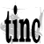
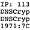
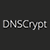
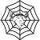
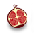
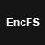
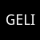
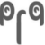

Opt out of global data surveillance programs like PRISM, XKeyscore and Tempora. Stop governments from spying on you by encrypting your communications and ending your reliance on proprietary services.
Operating system
Proprietary
-
 Apple OS X
Apple OS X -
 Google Chrome OS
Google Chrome OS -
 Microsoft Windows
Microsoft Windows
Free alternatives
- GNU/Linux
-

Arch Linux
Elegant, minimal, and flexible Linux® distribution.
-

Debian
Strictly free, ethical GNU/Linux distribution. most stable
-

Fedora
Fast, stable and powerful GNU/Linux distribution. most cutting edge
-

Gentoo
GNU/Linux distribution about choice, control and security. most advanced features
-

Linux Mint Debian Edition
Comfortable and easy-to-use GNU/Linux distribution based on Debian. friendly defaults
-

openSUSE
Stable, easy-to-use multi-purpose GNU/Linux distribution. easiest to use
-

Qubes OS
Fedora/Xen-based OS designed to provide strong security through isolation.
- GNU/Linux (FSF endorsed)
-

gNewSense
Fully free software GNU/Linux distribution based on Debian.
-

Parabola
Libre, lightweight, and flexible GNU/Linux distribution based on Arch Linux.
- BSD
-

FreeBSD
A free BSD-derived operating system.
-

OpenBSD
A secure BSD operating system. most paranoid
Notes
Live CDs & VM images
Free alternatives
-

Liberté Linux
Live CD/USB based on Hardened Gentoo designed as a communication aid in hostile environments.
-

Tails
Live CD/USB based on Debian and Tor aimed at preserving your privacy and anonymity.
-

JonDo
Live CD/USB based on Debian with pre-configured tools for anonymous surfing and more.
-

Whonix
VM-friendly OS based on Debian and Tor focused on anonymity, privacy and security.
Notes
A live distribution like Tails or Liberté Linux is the fastest and easiest way to a secure operating system. All you have to do is create a bootable CD or USB drive with the files provided and you’re set. Everything else will be preconfigured for you.
A virtual machine (VM) image like Whonix is designed to be run inside of a virtualization package like VirtualBox. VirtualBox can be installed on Windows, Linux, OS X, and Solaris. This means that if you're stuck using Windows or OS X for whatever reason, you can install VirtualBox and use Whonix to increase your privacy and security.
Android
Proprietary
-
 Google Android
Google Android -
 Google Play
Google Play
Free alternatives
Operating system
-

CyanogenMod
Aftermarket firmware for Android devices.
-

Replicant
Fully free Android distribution based on CyanogenMod. FSF endorsed
-

Firefox OS
Free and open source operating system for Android-compatible devices.
Digital distribution
-

F-Droid
Free and open source alternative to the Google Play app store for Android. FSF endorsed
Notes
If Replicant supports your Android device, you should definitely use it instead of Cyanogenmod, as Replicant is fully free and runs without relying on proprietary system code.
CyanogenMod licensing:
“CyanogenMod does still include various hardware-specific code, which is also slowly being open-sourced anyway.”
Google Apps for Android (Gapps) are the proprietary applications by Google that come pre-installed with most Android devices. After flashing your firmware with either Cyanogenmod or Replicant, safeguard your data by not re-installing Google Apps on your phone.
Uninstall Gapps from any firmware with this guide by ciddaemon.
We believe that replacing your Android device's OS with open source software can greatly improve the privacy and security of your device. However, it is possible that your device's closed-source hardware will still remain capable of certain privacy violations.
iOS & WP
Proprietary
-
 Apple iOS
Apple iOS -
 Microsoft Windows Phone
Microsoft Windows Phone
Free alternatives

Notes
iOS and WP are proprietary operating systems whose source code are not available for auditing by third parties. You should entrust neither your communications nor your data to a closed source device.
Web browser
Proprietary
-
 Apple Safari
Apple Safari -
Google Chrome
-
 Microsoft Internet Explorer
Microsoft Internet Explorer -
 Opera
Opera
Free alternatives
- IP hidden
-

Tor Browser Bundle
Encrypted, anonymous web browsing powered by the Tor network.
-
JonDonym
Private browsing with the JonDo IP anonymization service and JonDoFox profile for Firefox.
- IP exposed
-
Mozilla Firefox
Fast, flexible and secure web browser with a vibrant add-on ecosystem.
- Android
-

Orbot
The features and functionality of Tor for Android.
- Apple iOS
-

Onion Browser
Surf the web through the Tor network with this open source browser for iOS devices. paid software
Notes
Try to use Tor Browser Bundle (TBB) for all of your web surfing. It will offer you far better anonymity than any other browser. Make sure to learn the basics of Tor before using it. If the site you want to visit will not work in the TBB, try Firefox instead, but realize these browsers do not anonymize your IP by default.
TBB notes: Using the TBB to sign into websites that contain your real ID is counterproductive, and may trip the site's fraud protection. Make sure to check for HTTPS before signing in to a website through Tor. Signing into HTTP websites can result in your ID being captured by a Tor exit node.
Firefox notes: This browser uses Google search by default: replace it with a more private alternative. Another debranded alternative to Firefox is Iceweasel, a browser for Debian-based distributions.
Why are Chromium, SRWare Iron, et al. not recommended on PRISM Break? More info here.
Warning for mobile devices & Tor: Websites using HTML5 <video> tags will leak <video>-related DNS queries and data transfer outside of Tor.
Why are privacy- and security-enhancing addons for proprietary browsers not listed?
Because the improvements they may achieve can not be significant in the context of their untrustworthy host browser. Switching to a free, open-source browser like Firefox achieves better improvements.
Web browser add-ons
Free alternatives
- Privacy & security
-

Adblock Edge
Block advertisements and trackers across the web with filter subscriptions.
-

Disconnect
Visualize and block invisible tracking of your search and browsing history.
-

HTTPS Everywhere
Encrypt your communications from thousands of websites by enforcing HTTPS everywhere.
-

NoScript
Only enable JavaScript, Java, and Flash for sites you trust. advanced
-

RequestPolicy
Control which cross-site requests are allowed by sites you visit. advanced
- Instant messaging
-
CryptoCat
Private and encrypted instant messaging within the web browser. OTR
- Email encryption
-

Mailvelope
OpenPGP email encryption tool for major webmail services. PGP beta
Notes
Installing your own add-ons into the Tor Browser is not recommended, as they may bypass Tor or otherwise harm your anonymity and privacy. Check the EFF's Panopticlick to see how trackable your browser configuration is by third parties.
If you're using a Firefox-based browser, you can safeguard your browsing habits and stop advertising companies from tracking you by installing Adblock Edge, Disconnect, and HTTPS Everywhere.
Install NoScript and enable ‘Forbid scripts globally’ to improve the security of your browser by preventing 0day JavaScript attacks. This is a drastic option as it will render many websites unusable as they rely heavily on JavaScript. NoScript offers a whitelist you can use to selectively enable JavaScript for sites you trust, but this is considered especially bad for your anonymity if you're using NoScript with Tor.
Why is Adblock Plus not recommended? Adblock Plus shows “acceptable ads” by default, which works against the purpose of the add-on. Either disable acceptable ads or use the Adblock Edge fork instead.
Ghostery is an alternative anti-tracker add-on to Disconnect. While the code is available, the license is currently proprietary.
TheRequestPolicy-addon offers a 1.x beta release channel which enables default policies and subscriptions. Activating “Block requests by default”, “Allow requests to the same domain” combined with some “Usability” subscriptions should yield a largely undisturbed surfing experience, while blocking most trackers.
Web search
Proprietary
-
 Google Search
Google Search -
 Microsoft Bing
Microsoft Bing -
 Yahoo! Search
Yahoo! Search
Free alternatives


Notes
DuckDuckGo is a software-as-a-service (SaaS) hosted around the world that provides you with anonymous search results from these sources. DDG open source components are available here.
There is also a DuckDuckGo hidden service at 3g2upl4pq6kufc4m.onion for Tor users.
MetaGer is a SaaS by the German non-profit SUMA e.V. that provides you with anonymous meta search results.
Startpage is a SaaS hosted in the USA and the Netherlands that provides you with anonymous Google search and image results through a free proxy.
Ixquick (run by the same company as Startpage) is a meta search engine that returns combined results from nearly 100 sources - excluding Google.
YaCy is a promising project that offers fully decentralized peer-to-peer search. The more people who start using it, the better the results will become.
Maps
Proprietary
-
 Apple Maps
Apple Maps -
Google Maps
-
 Google Earth
Google Earth -
Microsoft Bing Maps
-
Yahoo! Maps
Free alternatives


Notes
“If you spend time contributing to OpenStreetMap you are helping a good cause, and building a geographic database of the world which is free and open for all and forever.”
Email service
Proprietary
-
 Google Gmail
Google Gmail -
 Microsoft Outlook.com
Microsoft Outlook.com -
Yahoo! Mail
Free alternatives
- Service
-

Autistici/Inventati
A full range of privacy-aware services including hosting, VPNs, email, IM, and more. approval required
-

MyKolab
Secure, private Kolab accounts hosted in Switzerland. Email from 4.85 CHF, full groupware from 9.70 CHF per month. paid service
-

Riseup
Secure communication tools for people working on liberatory social change. invitation required USA hosted
- Peer to peer software
-

Bitmessage
beta
-

RetroShare
PGP
Notes
For more email providers, take a look at Privacy-Conscious Email Services. Please decide for yourself whether if you trust them with your data. For more discussion about safe email providers, please see issue #461.
MyKolab is hosted in Switzerland and benefits from the strong Swiss privacy laws. It is run exclusively with free software and using the service supports the development of Kolab. Also, it lets you export all your data at any time.
Riseup’s services may also be accessed via their Tor Hidden Service addresses. A list is available here.
Bitmessage is a promising alternative to email, but it has not yet been audited by security professionals. Use at your own risk. If you decide to try out Bitmessage, make sure to generate a completely random ID to greatly reduce the probability of ID collisions.
RetroShare has not been thoroughly audited by security professionals for possible security issues.
Why not Hushmail? See 'compromises to email privacy'.
If you have the technical aptitude, consider running your own mail server.
Email client
Proprietary
-
Apple OS X Mail
-
Microsoft Office Outlook
Free alternatives
-

Mozilla Thunderbird
Multi-platform email application with mail encryption through the Enigmail add-on.
-

Icedove
Libre edition of Mozilla Thunderbird for Debian GNU/Linux—mail encryption via Enigmail.
-

Enigmail
OpenPGP email encryption add-on for Thunderbird and Icedove. PGP
-
TorBirdy
Add-on that makes Thunderbird and Icedove connect through Tor. experimental
-

Claws Mail
Lightweight, featureful email application for multiple platforms with built-in PGP support. PGP
-

Evolution
Email, address book, and calendar application for the GNOME desktop with PGP support. PGP
-

Kontact
Email, address books, calendars, and more for the K Desktop Environment (KDE) with PGP support. PGP
-

Sylpheed
Lightweight, user-friendly email application for multiple platforms with built-in PGP support. PGP
- Android
-

K-9 Mail
Email application for Android devices with built-in PGP support. PGP
Notes
Switching from a proprietary service like Gmail to one of the more transparently-run email services on PRISM Break is the first step to a secure email account.
The second step is getting you and your contacts to encrypt your plain text messages with PGP encryption. This section contains free email clients that support PGP.
Here is a guide by Security In A Box to encrypting your email with Mozilla Thunderbird, GNU Privacy Guard (GPG), and Enigmail.
Find out more about the differences between Mozilla Thunderbird and Icedove.
Email encryption
Free alternatives


Notes
“Pretty Good Privacy (PGP) is a data encryption and decryption computer program that provides cryptographic privacy and authentication for data communication. PGP is often used for signing, encrypting and decrypting texts, e-mails, files, directories and whole disk partitions to increase the security of e-mail communications.”
PRISM Break does not recommended S/MIME email encryption because of its reliance on third-party certificates from central authorities. Read more here.
APG has not been updated in three years. Experimental PGP projects worth looking at are OpenPGP Keychain (a APG fork) and GnuPG for Android by the Guardian Project.
Instant messaging
Proprietary
-
 AOL Instant Messenger
AOL Instant Messenger -
 Apple iMessage
Apple iMessage -
Google Talk
-
 Trillian
Trillian -
 Viber Messenger
Viber Messenger -
 WhatsApp Messenger
WhatsApp Messenger -
Yahoo! Messenger
Free alternatives
-

Pidgin
Free universal instant messaging client. XMPP OTR
-

Off-the-Record Messaging - OTR
Install and enable this plugin in Pidgin for encrypted chat.
-

Adium
Multiprotocol chat client for Apple OS X with OTR features. XMPP OTR
-

Gajim
Light and fast IM client for GNU/Linux and Windows—OTR support via plugin. XMPP OTR PGP
-
Psi Plus
Multi-platform IM client for power users with built-in OTR support. XMPP OTR PGP
-

TorChat
Anonymous P2P chat built on Tor Hidden Services (not sponsored by the Tor Project).
- IRC
-

BitlBee
IRC instant messaging gateway that supports a bunch of protocols. XMPP OTR
-
HexChat
Cross-platform IRC client.
-

WeeChat
Extensible and customisable CLI chat client for IRC and XMPP. XMPP OTR
- Android
-

Gibberbot
Private, secure OTR messaging for Android. OTR
-

Surespot
Free, open-source, end-to-end encrypted messaging for Android.
-

TextSecure
Secure SMS/MMS communication for Android. advanced
-

Xabber
OTR-encrypted instant messaging for Android. XMPP OTR
- Apple iOS
-

ChatSecure
Encrypted IM for iOS devices. OTR
Notes
“Off-the-Record Messaging, commonly referred to as OTR, is a cryptographic protocol that provides strong encryption for instant messaging conversations. OTR uses a combination of the AES symmetric-key algorithm, the Diffie–Hellman key exchange, and the SHA-1 hash function. In addition to authentication and encryption, OTR provides perfect forward secrecy and malleable encryption.
The primary motivation behind the protocol was providing deniability for the conversation participants while keeping conversations confidential, like a private conversation in real life, or off the record in journalism sourcing.”
Note that Pidgin stores your IM account passwords in plain text. You can avoid this by (1) not saving your password in Pidgin, (2) encrypting your file system with software like TrueCrypt, or (3) storing your Pidgin password securely with the Debian package pidgin-gnome-keyring.
Pidgin with OTR and dbus enabled has a security bug that can be exploited by malicious programs on your PC. See the upstream bug report for more information and possible workarounds.
The Guardian Project hosts a fantastic how-to guide to chatting securely on Android with Gibberbot.
Threema is not recommend by PRISM Break as it is closed source software. Freely available source code is a necessary condition for privacy and security.
Video conferencing & VoIP
Proprietary
-
 FaceTime
FaceTime -
 Google+ Hangouts
Google+ Hangouts -
Google Talk
-
 Skype
Skype
Free alternatives
-

Jitsi
Encrypted text, voice, and video messaging for multiple platforms. XMPP SIP
-

Linphone
Encrypted voice and video chat client for multiple platforms. SIP
-

Mumble
Encrypted, low-latency multi-user voice chat.
- Android
-

CSipSimple
End-to-end encrypted VoIP calls for Android devices. SIP
-

RedPhone
End-to-end encrypted calls for Android devices. advanced
Notes
Get a free SIP account for Jitsi and/or CSipSimple with The Guardian Project’s Ostel service.
Jitsi warnings: Jitsi may request non-secure information during encrypted chat if you paste a link into it. This can be disabled in "Preferences/Options > Chat > Enable Image/Video replacement". Also, if Jitsi is set up to use Tor, it may leak DNS information by not using Tor for DNS resolution. Lastly, Jitsi records chat history in unencrypted form. This can be disabled under "Preferences/Options > General > Log chat history"
Cloud storage
Proprietary
-
 Apple iCloud
Apple iCloud -
 Dropbox
Dropbox -
 Google Drive
Google Drive -
 Microsoft SkyDrive
Microsoft SkyDrive
Free alternatives
- Service
-
MyKolab
Secure, private Kolab accounts hosted in Switzerland. Full package includes file cloud. paid service
- Software
-

git-annex assistant
Synchronize folders on your computers and drives.
-

AjaXplorer
Instantly turn any server into a file sharing platform.
-

Cozy Cloud
A personal PaaS you can host, hack and delete
-

ownCloud
Cloud data in your control.
-

Sparkleshare
FSF endorsed
-

Tahoe-LAFS
Free and open cloud storage system. FSF endorsed
Notes
Cloud file storage is also available via Chwala/iRony components of Kolab with the capability to integrate various storage backends. Files are accessible via storage layer access options, WebDAV and Kolab web interface integrating Roundcube.
Tarsnap is not recommended on PRISM Break due to its lack of anonymous payment options and strict copyright on the client that makes it difficult to replace the service in the event Tarsnap is shut down.
BitTorrent Sync, MEGA, and SpiderOak are services that are built on either partially or fully proprietary software. They will not be recommended on PRISM Break until they open source the entirety of their codebase.
With closed source software, you need to have 100% trust in the vendor because there's nothing except for their morality in the way of them leaking your personal information. Even if you can vouch for their integrity, proprietary software invariably has more uncaught security bugs and exploits because there are fewer eyes examining the source code.
Another alternative to cloud storage is local backup with external hard drives and USB flash drives. This method is reliably more secure than storing data on a network, but comes at a convenience cost.
Scheduling
Proprietary
-
Doodle
Document collaboration
Proprietary
-
Google Docs
-
 Microsoft Office Web Apps
Microsoft Office Web Apps -
 Zoho Office Suite
Zoho Office Suite
Free alternatives


Notes
The etherpad project maintains a list of sites that run etherpad services. Please only choose from the services that use SSL, and research the site's background before trusting them with your data.
Riseup also offers email, XMPP, and chat services, all of which are accessible through Tor Hidden Service addresses. The list of these addresses is available here.
Media publishing
Proprietary
-
 Flickr
Flickr -
 Instagram
Instagram -
 Picasa
Picasa -
 Tumblr
Tumblr -
 YouTube
YouTube -
Vimeo
Free alternatives
- Service
-

Noblogs.org
Blog publishing platform based on WordPress, by autistici.org.
-
MediaCrush
Privacy-first fast media (image, video, audio) hosting. USA hosted
- Software
-
MediaCrush
You can also run self-hosted instances of MediaCrush.
-

GNU MediaGoblin
Decentralized media publishing platform. FSF endorsed
-

Piwigo
Self-hosted photo gallery platform.
-

WordPress
Self-hosted website publishing platform.
-

Zenphoto
Self-hosted media management system.
Notes
Self-hosting your media is important for privacy and security. Hosting your blog on WordPress.com is no better for your data security than Blogger or Tumblr.
Warning: Using avatars in WordPress will activate Gravatar, which which will send your email address to gravatar.com. Avatars are activated by default and can be turned off under “Settings > Discussion > Avatars”.
Warning: MediaCrush includes Google Analytics and Google Adsense if you do not have Do Not Track enabled.
Online transactions
Proprietary
-
 PayPal
PayPal -
Google Wallet
Free alternatives


Notes
Learn more about Bitcoin and get started with your first free wallet at We Use Coins.
Digital distribution
Proprietary
-
 Steam
Steam
Free alternatives

Notes
Desurium is only the client. You will still have to trust/depend on the proprietary desura service.
Virtual Private Network (VPN)
Proprietary
-
 Cisco Systems VPN Client
Cisco Systems VPN Client -
 Viscosity
Viscosity
Free alternatives
- Service
-
A/I VPN
Secure personal VPN service provided by Autistici/Inventati. approval required
-
Riseup VPN
Secure personal VPN service provided by Riseup. USA hosted
- VPN client
-

OpenVPN
Free software VPN client.
-

Libreswan
Free software VPN client 3rd generation derived from Openswan.
-

Openswan
Free software VPN client derived from FreeS/WAN.
-

strongSwan
Free software VPN client derived from FreeS/WAN.
-

Tinc
Free software daemon that uses tunnelling and encryption to create a secure private network
Notes
Encrypted virtual private network (VPN) technology can be used by ordinary Internet users to connect to proxy servers for the purpose of protecting one’s identity and online footprint.
More on Wikipedia.
Web analytics
Proprietary
-
Google Analytics
Free alternatives


Notes
--
DNS provider
Proprietary
-
Google Public DNS
Free alternatives
- Service
-

CloudNS
DNS hosting service with DNSCrypt, DNSSec, and Namecoin support.
-

OpenNIC Project
Open, democratic, and anti-censorship DNS provider.
- Software
-

DNSCrypt
A tool to secure communications between a client and a DNS resolver.
-

Namecoin
Distributed DNS for the .bit TLD based on Bitcoin technology. advanced
Notes
Google Public DNS permanently logs your ISP and location information for analysis. Your IP address is also stored for 24 hours.
OpenNIC has not adopted an official policy concerning log query privacy/anonymization. You may choose anonymous DNS servers on this page.
Anonymizing network
Free alternatives
-

Freenet
Decentralized censorship-resistant network.
-

I2P
The invisible internet project.
-

Syndie
Distributed, anonymous forum software.
-
Tor Hidden Services
The Tor network offers access to *.onion websites.
-

GNUnet
GNUnet is a fully free P2P network.
- Android
-

Nightweb
Anonymous I2P network for Android and desktop.
Notes
--
Meshnet
Free alternatives
-
Commotion Wireless
Uses mobile phones, computers, and wireless routers to create decentralized mesh networks.
-

Project Meshnet
A decentralized alternative to the internet.
-

freifunk.net
A non-commercial open grassroots initiative to support free radio networks around the world. German
-
guifi.net
Open, free and neutral wireless network for everyone.
-

Project Byzantium
Byzantium is a live Linux distribution that delivers easy-to-use mesh networking.
-

LibreVPN
A free network that runs over other networks. Spanish
Notes
A meshnet is a decentralized peer-to-peer network, with user-controlled physical links that are usually wireless.
“Mesh networking (topology) is a type of networking where each node must not only capture and disseminate its own data, but also serve as a relay for other nodes, that is, it must collaborate to propagate the data in the network.”
Server operating system
Proprietary
-
Apple OS X Server
-
Microsoft Windows Server
Free alternatives
- GNU/Linux
-

CentOS
Enterprise class computing platform with 100% binary compatbility with RHEL.
-
Debian
Strictly free, ethical GNU/Linux distribution.
-

SME Server
Simple distro based on CentOS with preconfigured mail, file sharing, web server, and more.
-
Yunohost
Personal distribution based on Debian with preconfigured mail, IM, and web server.
- BSD
-
FreeBSD
A free BSD-derived operating system.
-
OpenBSD
A secure BSD operating system. most paranoid
Notes
The only way to have full control over your personal data is to run your own server. This is not for everyone though, as it requires considerable time investment and technical knowledge.
File encryption
Proprietary
-
Apple FileVault
-
BitLocker Drive Encryption
-
 McAfee Endpoint Encryption
McAfee Endpoint Encryption -
Symantec Drive Encryption
Free alternatives
-

TrueCrypt
Real-time disk and partition encryption software for multiple platforms.
-

DiskCryptor
High performance partition encryption software for Windows.
-

dm-crypt
Transparent disk encryption subsystem included in the GNU/Linux kernel.
-
Linux Unified Key Setup
LUKS is a convenience and ease-of-use layer for use on top of dm-crypt.
-

EncFS
File based encryption tool with support for Linux, Mac OS and Windows.
-

geli
Disk encryption subsystem included in the FreeBSD operating system. BSD
Notes
While TrueCrypt is open source, it is developed in a closed fashion and may receive less review than a comparably openly deveoped project. That said, it is still probably the best option for file encryption on Windows and OS X.
If you’re running GNU/Linux, dm-crypt with LUKS is the recommended encryption option.
Gentoo GNU/Linux maintains a guide for dm-crypt with LUKS.
Arch GNU/Linux maintains a guide to dm-crypt with LUKS. Also useable for Parabola GNU/Linux.
Transparency in this context means that individual programs don't need to manage encryption of their own data, because this is provided equally for all programs by the encryption tool (like dm-crypt). More details on this in the Wikipedia.
Mail server
Proprietary
-
Google Apps
-
 IBM Notes
IBM Notes -
 Microsoft Exchange
Microsoft Exchange -
 Novell GroupWise
Novell GroupWise
Free alternatives
- Mail server
-

iRedMail
Install and configure mail server packages automatically in GNU/Linux and BSD. GPLv2
-

IndiMail
Highly scalable and configurable messaging platform based on the MTA qmail. GPLv3
- Groupware server
-

Kolab
Groupware solution for email, files, calendars, address books and mobile sync. Various FOSS licenses
- Mail transfer agent (MTA)
-

Exim
MTA used on approximately 43% of all mail servers—the default on Debian GNU/Linux. GPL
-

Postfix
Easy-to-setup MTA used by approximately 23% of all mail servers. IBM Public License
Notes
A beginner’s guide to running your own mail server is available here: “NSA-proof your e-mail in 2 hours”.
Kolab integrates Roundcube into its webclient and offers desktop clients as well. Recent versions also feature a file cloud turning it into a complete solution for personal information management.
What is an MTA?
“Within Internet message handling services (MHS), a message transfer agent or mail transfer agent (MTA) or mail relay is software that transfers electronic mail messages from one computer to another using a client–server application architecture. An MTA implements both the client (sending) and server (receiving) portions of the Simple Mail Transfer Protocol.
The terms mail server, mail exchanger, and MX host may also refer to a computer performing the MTA function. The Domain Name System (DNS) associates a mail server to a domain with mail exchanger (MX) resource records containing the domain name of a host providing MTA services.”
XMPP server
Free alternatives
- Service
-

dukgo.com
Private XMPP service run on the DuckDuckGo Community Platform—guide included.
- Software
-

ejabberd
XMPP server written in Erlang/OTP for GNU/Linux and OS X. GPLv2
-

Openfire
Cross-platform XMPP server written in Java. Apache
-

Prosody IM
Flexible XMPP server written in Lua. MIT/X11
-

Tigase
Cross-platform XMPP server written in Java. GPLv3
-

Metronome IM
XMPP server based on Prosody, with advanced management/microblogging features. ISC and MIT/X11
Notes
“Extensible Messaging and Presence Protocol (XMPP) is a communications protocol for message-oriented middleware based on XML (Extensible Markup Language). The protocol was originally named Jabber, and was developed by the Jabber open-source community in 1999 for near real-time, instant messaging (IM), presence information, and contact list maintenance. Designed to be extensible, the protocol has also been used for publish-subscribe systems, signalling for VoIP, video, file transfer, gaming, Internet of Things applications such as the smart grid, and social networking services.”
SIP server
Free alternatives


Notes
“The Session Initiation Protocol (SIP) is a signaling communications protocol, widely used for controlling multimedia communication sessions such as voice and video calls over Internet Protocol (IP) networks.”
Here’s a guide by Asipto to setting up and running your own Skype-like SIP service with Kamailio in under an hour.
Hardware & software setup
Free alternatives

Notes
--
Datacenters
-
 Go Daddy
Go Daddy -
Host Gator
Free alternatives
-

PRQ
PRQ, previously the host of The Pirate Bay, is one of the most reputable free speech datacenters located in Sweden. paid service
-
Cyber Bunker
Located in several undisclosed ex-Soviet nuclear bunkers, Cyber Bunker touts itself as "The Most Reliable Datacenter in the World". paid service
-
Bahnhof
Also in a nuclear bunker, Bahnhof acted as a host for the extremely controversial Wikileaks. paid service
Notes
Although in many cases, it is good to host projects on one's own hardware, there are many limitations associated with that approach. First of all, most people do not have equal throughput to that of a large datacenter. If a self-hosted website gets popular, it could easily crash the home connection. Furthermore, it can be beneficial to host sensitive material offshore, in a country with better privacy laws.
What is “free software”?
“Free software” means software that respects users’ freedom and community. Roughly, the users have the freedom to run, copy, distribute, study, change and improve the software. With these freedoms, the users (both individually and collectively) control the program and what it does for them. (more …)
—The Free Software Foundation
Take action against PRISM.
MASSIVE SURVEILLANCE EXPOSED
Recent reports by the Guardian and the Washington Post confirm secret spying programs on phone records and Internet activity. It‘s time for a full accounting of America’s secret spying programs—and an end to unconstitutional surveillance. (more …)
—The Electronic Frontier Foundation
Social networking
Proprietary
Free alternatives
buddycloud
Open source, federated social network. XMPP
Diaspora
Community-run, distributed social network. FSF endorsed
Friendica
Privacy respecting, distributed, federated social network.
GNU Social
Self-hosted, decentralized social network. FSF endorsed
Lorea
Distributed and federated social nodes.
Movim
Private, decentralized social network server. XMPP
pump.io
Self-hosted social stream server. FSF endorsed
Salut à Toi
Multi-frontend, multipurpose communication tool. XMPP
Tent
Protocol for realtime decentralized communication and personal data storage.
Notes
If you have system administration knowledge, please strongly consider running an instance of pump.io (or something else) for your friends, family, or favorite community. Many of them would be willing and grateful to escape Facebook if you provide them a way out.
For those of you without your own server, RetroShare is the easiest way to start your own encrypted social network.
identi.ca is a popular Twitter-like social networking hub for the free and open source software community built on pump.io.